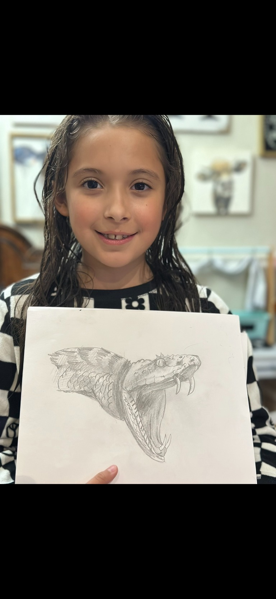
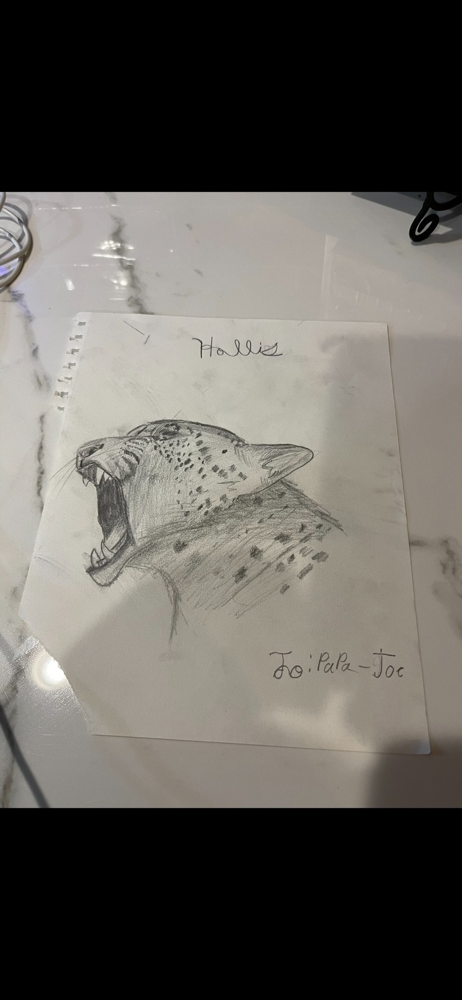
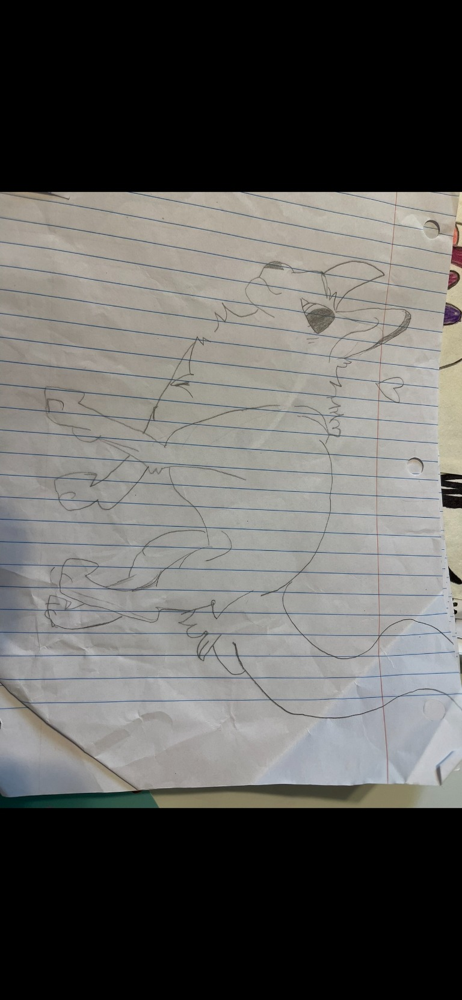
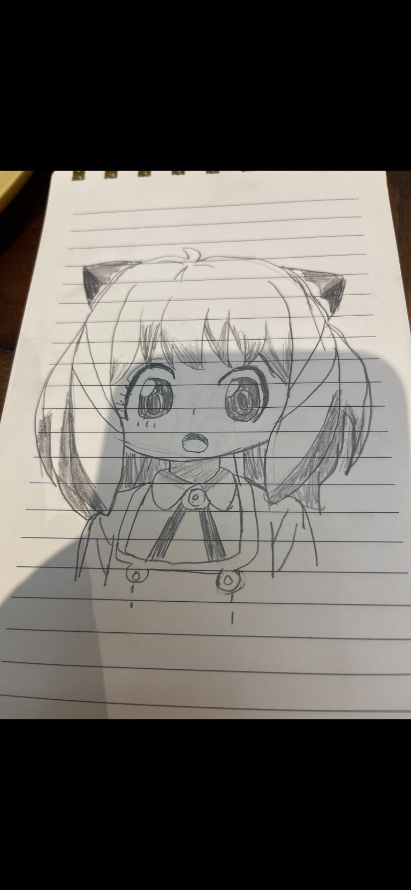

A GALLERY OF ORIGINAL ART
Hollis's Fine Art
Big ideas, brave lines, and a little imagination in every drawing.

Snake Study
A close-up pencil drawing full of texture and detail.

Wild Cat
A bold big-cat portrait, drawn in graphite.

Playful Character
A lively character sketch with expressive lines.

Wide-Eyed Character
A charming character portrait with big, bright eyes.